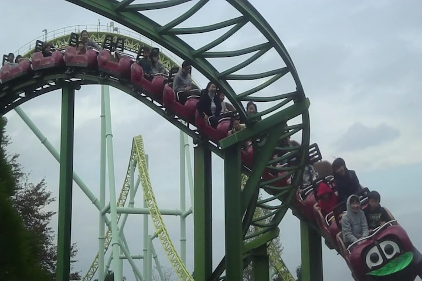
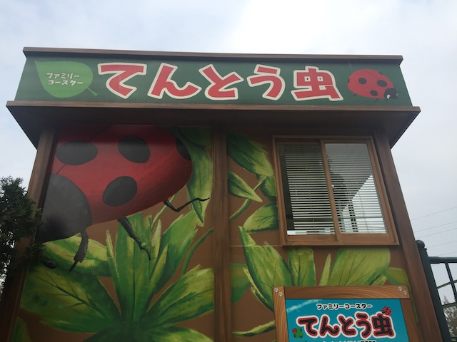

| |
Tentomushi Review

We're here at Tobu Zoo where's we'll be revewing the kiddy coaster. Tentomushi. We get in the cars, pull down the lap bar, and we're off. We head around a big curve. We then climb the lifthill and head down the first drop that's slightly curved. Wee. We then head up this small hill, getting a nice view of the lifthill tunnel. We lose a lot of our speed (though we didn't have much to begin with). We then head into this big long curve, gaining some of our speed back. Yeah, this is actually a really small drawn out non-banked helix. We then go through an S bend, going through the trees. We then rise up into a small hill, go around a turn, dip down, and into the station we go for another lap! YAY!!! Yeah, it's a kiddy credit, but you're a credit whore. That's why you're riding this ride.
3/10
Location: Tobu Zoo
Opened: 1998
Built by: Zeirer
Last Ridden: November 4, 2018
I have ridden this exact same ride at the following parks.
Gilroy Gardens
Nagashima Spaland
Parc Asterix
Schlossbeck
Tentomushi Photos


Home
|